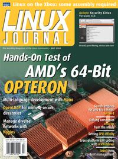

Shutdown Archive web server
Search:
Linux Journal
Issue #111/July 2003

Features
Running Linux on the Xbox
by Michael Steil
The Xbox is basically a PC, so with a little work you can upgrade it to run your OS of choice.
AMD64 Opteron: First Look
by Michael Baxter
Discover the new architecture that's backward-compatible with the x86 and has IBM, Cadence and others already offering products.
Network Management with Nagios
by Richard C. Harlan
The servers are from many vendors, the management software budget is small and the demands are high. Find out how the team at John Deere made it work.
Indepth
Getting to Know Mono
by Julio David Quintana
Working code shows how you can already work with objects created in one language, from another.
How to Index Anything
by Josh Rabinowitz
Create a local search engine to search HTML and every other document format on your system.
wxWindows for Cross-Platform Coding
by Taran Rampersad
A fast, stable toolkit for apps that run on any OS with a native look.
Embedded
An Event Mechanism for Linux
by Frederic Rossi
To meet the demands of telecom applications, a plan for a new level of cooperation between applications and the kernel.
Toolbox
Kernel Korner
CPU Affinity
by Robert Love
At the Forge
Zope's CMF
by Reuven M. Lerner
Cooking with Linux
Exploring Strange New Languages
by Marcel Gagné
Paranoid Penguin
LDAP for Security, Part I
by Mick Bauer
Columns
Linux for Suits
How Linux Makes Companies Smarter
by Doc Searls
EOF
Free Beer Doesn't Sell
by Ethan Zuckerman
Reviews
Astaro Security Linux V4
by Jeremy Impson
Extending and Embedding Perl
by Paul Barry
Departments
Letters
upFRONT
From the Editor
On the Web
Best of Technical Support
New Products
Archive Index
Shutdown Archive web server
Search:
Copyright © 1994 - 2018
Linux Journal
. All rights reserved.